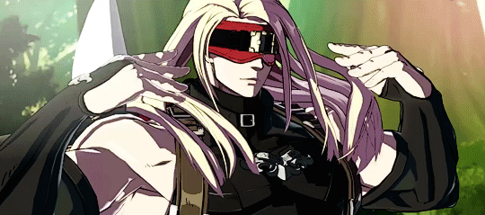

Orphaned by the crusades, and raised by the Assassin's Guild, Zato-1 would go on to live a life full of much tragedy. In order to ride the ranks of the guild, he would give up his eyesight to be able to fight using his shadow with the aid of a shadow demon who calls himself Eddie. Over the years, he would create strong bonds with his two associates, Venom and Millia, even becoming lovers with Millia. Eventually, she would betray him and over time his body would deteriorate and die, although Eddie took over his corpse. He carried on living in Zato's place but became too weak to carry on and died as well.
Eventually, the secretive organization known as the Enclave used Zato and Eddie's remains as a test for Faust’s stolen art of resurrection technique. He would go on to aid in preventing Ramlethal's war on the world and the threat of the Universal Will. Following the Fight, he helps his long-time friend Venom retire and start a new life as a baker. After also helping to stop Happy Chaos and I-No, Zato and Millia go visit Venom at his bakery.
